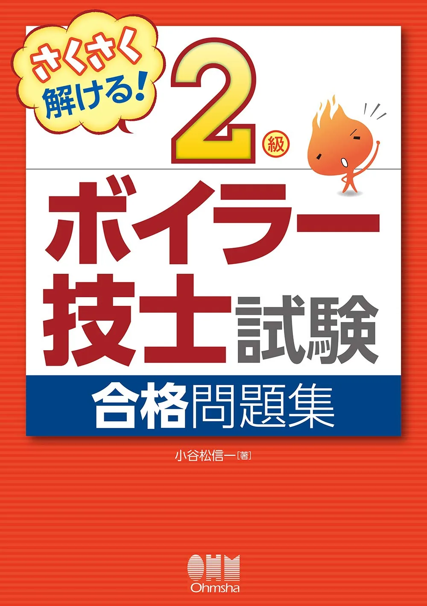
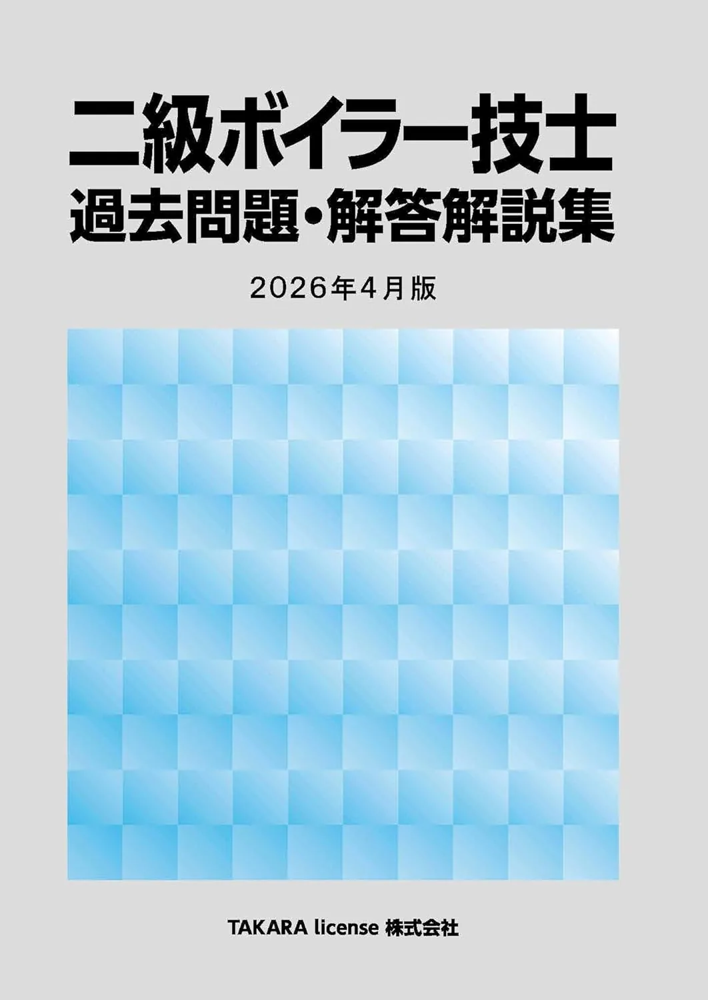

2級ボイラー技士のおすすめ問題集3選【2026年版·過去問】
2級ボイラー技士試験（40問·400点·240点合格·各科目40点以上）では、テキスト第1周後の問題集1冊が得点安定の分かれ目になります。本記事は成美堂 過去6回問題集'26年版·さくさく解ける! 合格問題集·TAKARA license 過去問題·解答解説集 2026年4月版の3冊を、収録形式·解説量·演習の回し方で比較します。価格は執筆時点（2026-06-12）のAmazon税込参考です。
この記事の信頼性について
| 執筆 | 2級ボイラー技士マスター編集部（資格学習サイトの編集チーム） |
|---|---|
| 確認 | 公式情報確認担当（公開前に一次情報との照合を行う担当者） |
| 事実確認日 | 2026-06-12 |
| 主な参照元 |
18/2（土）前：問題集選びの3基準（演習量·足切り·時間配分）
問題集はテキスト第1周の40〜50％以降に1冊追加するのが定番です。選ぶ前に次の3点で比較してください。2級ボイラーは各科目40点の足切りがあるため、総合点だけでなく4科目別の正答数も記録する問題集を優先します。
| 観点 | 確認内容 |
|---|---|
| 演習量 | 40問通しを月2回以上回せる収録量か |
| 解説 | 誤答理由を4科目別にメモできるか |
| 時間練習 | 13:30開始·180分の本番配分を想定できるか |
同時に2冊の問題集を開かず、1冊80％使い切ってから次へ進んでください。
おすすめ問題集3選（比較）
価格・在庫は執筆時点（2026-06-12）のAmazon税込参考です。購入前に販売ページで最新版を確認してください。
| 順位 | 商品名 | 価格（税込参考） | ページ数 | 向いている人 |
|---|---|---|---|---|
| 1 | 詳解 2級ボイラー技士 過去6回問題集 '26年版 | ¥1,650 | 272 | 直近6回分を解説付きで一気に解きたい人 |
| 2 | さくさく解ける! 2級ボイラー技士試験 合格問題集 | ¥2,420 | 254 | テキスト読了後に演習メイン1冊を探している人 |
| 3 | 2級ボイラー技士 過去問題・解答解説集 2026年4月版 | ¥3,300 | 210 | 最新実施回ベースで過去問演習をしたい人 |

詳解 2級ボイラー技士 過去6回問題集 '26年版
- 過去6回分で演習量を確保しやすい
- 詳解付きで復習しやすい定番
- 本試験形式の時間配分練習に向く

さくさく解ける! 2級ボイラー技士試験 合格問題集
- さくさくシリーズで初学者向けの解きやすさ
- 合格テキストとセットで使いやすい
- 4分野の演習をバランスよく回せる

2級ボイラー技士 過去問題・解答解説集 2026年4月版
- 2026年4月版で比較的新しい過去問を収録
- 解答解説付きで弱点科目の特定に向く
- 他社過去問との使い分けで演習量を確保
23冊の比較表（価格·収録形式·向き不向き）
執筆時点（2026-06-12）のAmazon税込参考です。購入前に販売ページで最新版を確認してください。
| 順位 | 書名 | 税込参考 | 向いている人 |
|---|---|---|---|
| 1 | 成美堂 過去6回'26年版 | 1,650円 | 直近6回を詳解付きで一気に解きたい人 |
| 2 | さくさく解ける! 合格問題集 | 2,420円 | さくさく理解テキストとペアで演習したい人 |
| 3 | TAKARA 2026年4月版 | 3,300円 | 最新実施回ベースで過去問を厚く回したい人 |
- 過去問の重複は避け
- 1冊目は成美堂かTAKARA
- テキスト別冊派ならさくさく解ける
- と役割分担すると迷いが減り
3成美堂 過去6回問題集'26年版：演習量確保の定番·1,650円
「詳解 2級ボイラー技士 過去6回問題集 '26年版」（成美堂出版·B5判·272頁·Amazon税込参考1,650円）は、直近6回分を解説付きで収録した過去問特化型です。
- 向いている人：本試験形式の40問通しを早めに始めたい人
- 予算を抑えつつ演習量を確保したい社会人
- ユーキャン·TACテキスト第1周後に演習メインへ移行する人
8/2（土）購入→9月第1週40問通し1回目、のスケジュールと相性がよいです。
- TAKARAとの使い分け：6回分を段階的に回すなら成美堂
- 最新回を厚く解きたいならTAKARA
- と2冊目以降の追加で検討してください（同時購入は不要）
4さくさく解ける! 合格問題集：テキストペア·2,420円
「さくさく解ける! 2級ボイラー技士試験 合格問題集」（オーム社·B5判·254頁·Amazon税込参考2,420円）は、さくさく理解! 合格テキスト（4274220915）と章立てを揃えやすい演習冊です。
- 向いている人：オーム社シリーズで第1周を進めている人
- 初学者向けの解きやすい解説を重視する人
- 4科目（構造·取扱い·燃料·法令）をバランスよく回したい人
テキスト内蔵型（ユーキャン等）を使っている場合は、重複を避け成美堂かTAKARAを先に検討してください。
- 成美堂との使い分け：さくさくはテキスト連動·初学者向け
- 成美堂は過去6回の本番形式演習
- が定番の役割分担
5TAKARA 過去問題·解答解説集 2026年4月版：最新回厚め·3,300円
2級ボイラー技士 過去問題·解答解説集 2026年4月版（TAKARA license·B5判·210頁·Amazon税込参考3,300円）は、比較的新しい実施回を中心に解答解説を収録した過去問集です。
- 向いている人：直近の出題傾向を厚く確認したい人
- 成美堂6回を終えたあと演習量を追加したい人
- 弱点科目の解説を丁寧に読みたい人
1冊目として選ぶ場合は、収録回数と演習計画を購入前にAmazonページで確認してください。
- 成美堂との使い分け：第1冊は成美堂で6回の基礎演習→第2冊目候補としてTAKARA
- または予算に余裕があればTAKARA単独
- の順が多い
6過去問の回し方·40問通し·解き直し（9月例）
問題集導入後は「科目別10問→40問通し→3日7日解き直し」の順で固定します。9月の例です。
| 週 | 演習 | 記録 |
|---|---|---|
| 9月第1週 | 13:30開始·40問·180分通し | 4科目得点·240点判定 |
| 9月第2週 | 40点未満科目を20問追加 | 誤答理由を1行メモ |
| 9月第3週 | 同じ40問セットを再演習 | 足切り解消を確認 |
| 10月第1週 | 本番2週前は新規を止める | 誤答ノートのみ30分 |
総合280点でも法令38点なら不合格です。2級ボイラー技士試験の合格点の記事の足切り判定とセットで記録してください。
7次に読む：テキスト比較と学習計画
問題集を決めたら、テキストとの役割分担を確認してください。
・テキスト3冊 → おすすめテキスト3選
・学習全体像 → 勉強時間と学習計画
・合格ライン → 合格点と合格基準
・本番形式 → 試験形式概要
・協会教材 → 公表問題·公式教材3選
収益リンクは比較表のAmazonボタンと本文下の関連リンクに集約しています。
8よくある質問
過去問だけで合格できますか？
問題集は何冊必要ですか？
成美堂とTAKARA licenseの違いは？
記事の基本情報
| ジャンル | 独学対策 |
|---|---|
| タグ | 独学 / 参考書 |
公式情報の確認
公式情報の確認：2級ボイラー技士試験の最新情報は、ボイラー検定（公式）などの公式情報を必ず確認してください。本人に割り当てられた試験会場は受験票の表記が正本です。